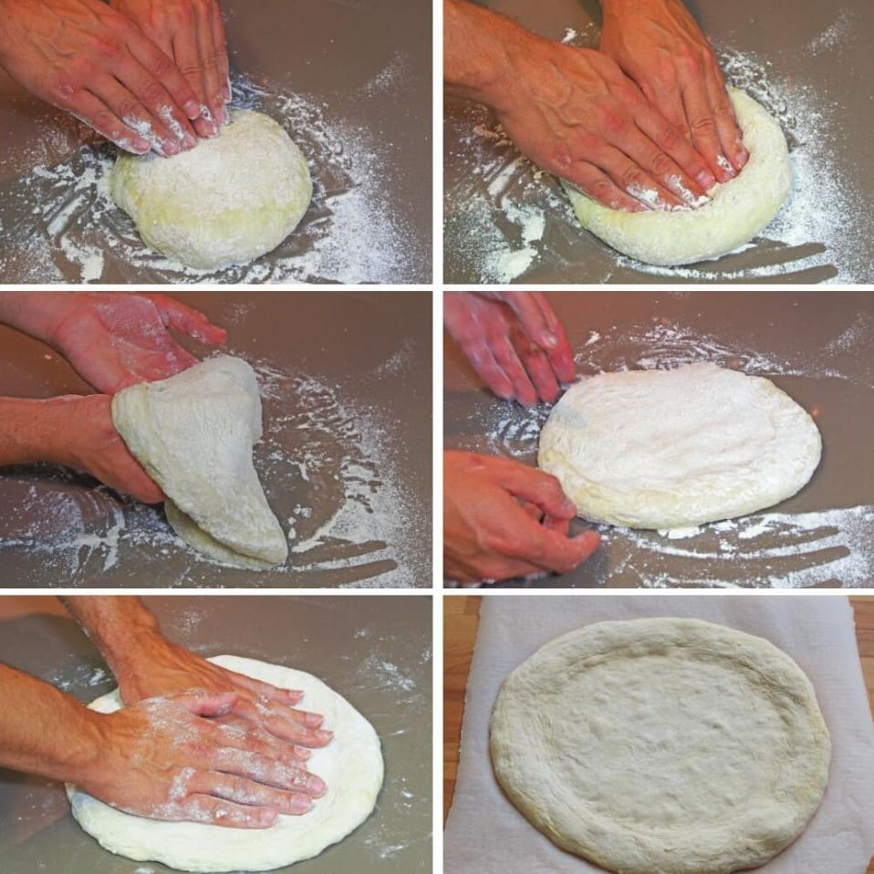
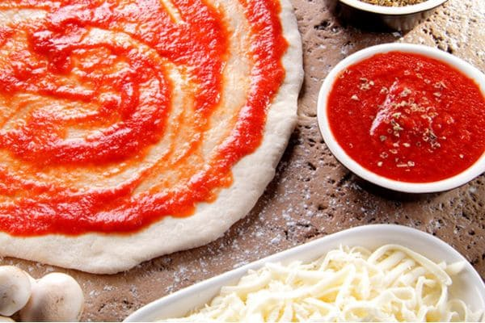
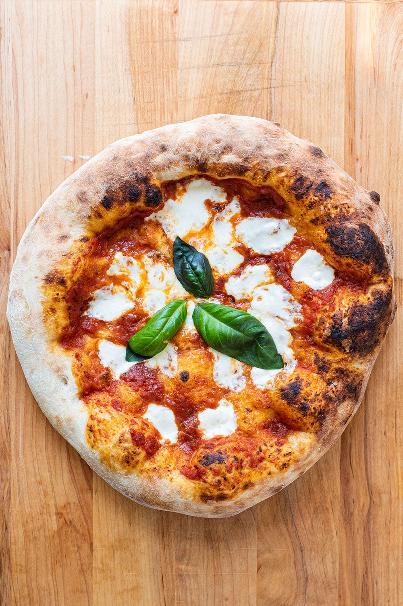

RECETAS
TÉCNICA DE ESTIRADO
EL SECRETO PARA TU PIZZA CON BORDES AIREADOS
Esas 72 benditas horas previas al armado de la pizza no tendrán sentido si no estiras correctamente la masa. A continuación proveemos un video que explica como se realiza de manera correcta desde el CENTRO HACIA AFUERA.

SALSA PARA PIZZA
INGREDIENTES
 1 LATA DE TOMATE
PERITA
1 LATA DE TOMATE
PERITA- CHORRITO DE ACEITE
DE OLIVA
- 5 gr SAL
- 3 HOJAS DE ALBAHACA
A continuación vamos a enseñarte como realizar la salsa tradicional italiana para el estilo NAPOLITANO. Es una salsa muy simple pero ahí esta el secreto.
PROCEDIMIENTO
- Ponemos en un bowl, o si tenemos licuadora mejor, todos nuestros ingredientes.
- Mixiamos, no mucho porque la idea es que
NO QUEDE
todo completamente triturado. - ¡LISTO!

PIZZA MARGARITA
INGREDIENTES
- 150 gr QUESO
MOZZARELLA
- 100 gr SALSA
- 20 gr QUESO
PARMESANO RALLADO.
- 5 HOJAS DE ALBAHACA
Esta es la receta CLÁSICA de Italia. La pizza más famosa del país. Su simpleza y sabor cautiva al mundo.
PROCEDIMIENTO
- Colocamos una base de salsa.
- Espolvoreamos queso parmesano.
- Distribuimos nuestro queso mozzarella.
- Horneamos a 400 grados (ideal con horno leña).
- Decoramos con Hojas de Albahaca y Aceite de Oliva.
TIP PARA HORNO COMÚN:
Para horno común se recomienda usar una placa de horno y poner primero SOLAMENTE la masa y la salsa. Luego que comienza a burbujear la salsa quiere decir que nuestra masa está casi lista.
En ese momento la retiramos, agregamos el queso y dejamos que siga unos minutos más hasta que el queso se derrita.
También podemos pintar los bordes de nuestra masa con aceite de oliva para que queden más dorados
